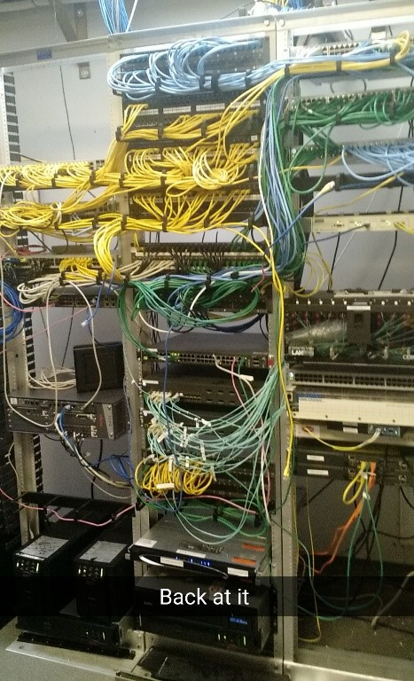
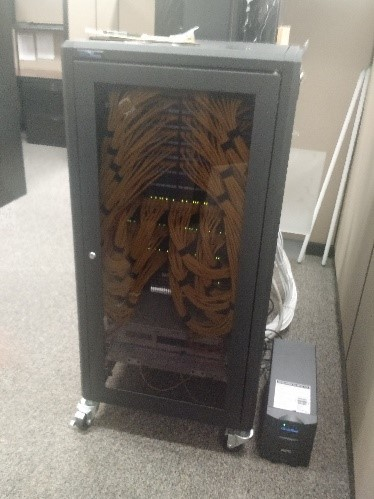
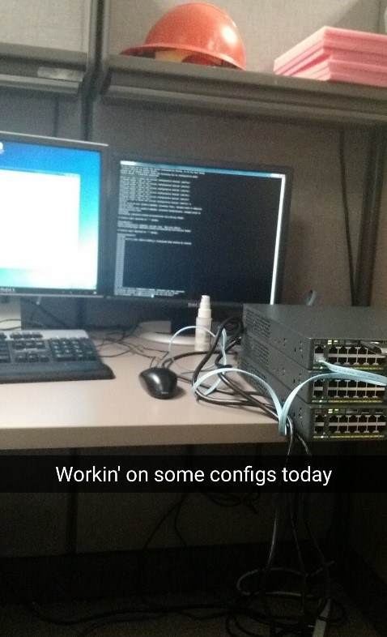

North Carolina Department of Transportation Internship
Personal Learning Objectives
My first learning objective was to learn to use network hardware brands other than Cisco
The Department of Transportation has a strong mix of Avaya, Nortel, and Cisco switches. Although they are now slowly migrating to solely Cisco network equipment there is still plenty of Avaya and Nortel equipment in the field to work with. At times I was able to assist with checking switch configurations, and even given the opportunity to configure replacement switches with specifications given by the network administrator
Flashing New IOS's to Cisco Switches
As I previously stated the Department of Transportation is making the switch to all Cisco network equipment which meant that there are huge shipments of switches being brought in about once a week that all need their IOS updated to the newest version. The IOS upgrade fell upon the network crew to handle. On days when we were not sent far out into the field or returned early enough for other tasks, we would begin flashing switches. When I first began flashing the switches it took me a while to understand the full importance of every little piece of syntax that must be entered correctly or else the switch can be corrupted and must be erased and started over from the beginning. After my first few IOS upgrades I was able to do up to four of five at a time using the same usb drive.
Install Cat5e or Cat6 Network Cable
Since I have been working for the Department of Transportation I have learned the proper and improper ways of running ethernet lines from patch panels to rooms all across buildings. Some cable runs would be as short as to the next room over, while some longer ones stretched up to 150 feet in large buildings. I also installed cables in old and new buildings. Usually old buildings would be harder to accommodate because when they were built they were not meant to have electric lines through them much less internet lines. In buildings with such age one person had to go into the attic above the building or sometimes crawl beneath the floor to pull lines. Some buildings lines had to be run underneath the building through “J hooks” to keep them high enough that they cannot be tampered with, but could not be in the ceiling due to asbestos being used in the insulation. Luckily those buildings were few and far between, mainly we pulled lines above drop ceiling which was much easier. A few members of the network team would get on ladders and remove necessary ceiling tiles and push the lines across using a retractable pole called the “push pole”.
Troubleshooting Both Data and Voice Connections
I have also gained experience troubleshooting data and voice connections. When there are problems with a network we are dispatched to troubleshoot and hopefully solve the issue. When troubleshooting VoIP phones the first non-physical checkpoint is to make sure it boots correctly from power over ethernet. Once that is confirmed it is necessary to make sure the phone is being assigned an address in the correct subnet, and pulling the voice vlan from the switch. I learned these steps as I went on more and more troubleshooting calls, and began to understand the phones boot process and vlan assignments.



© DMM 2016